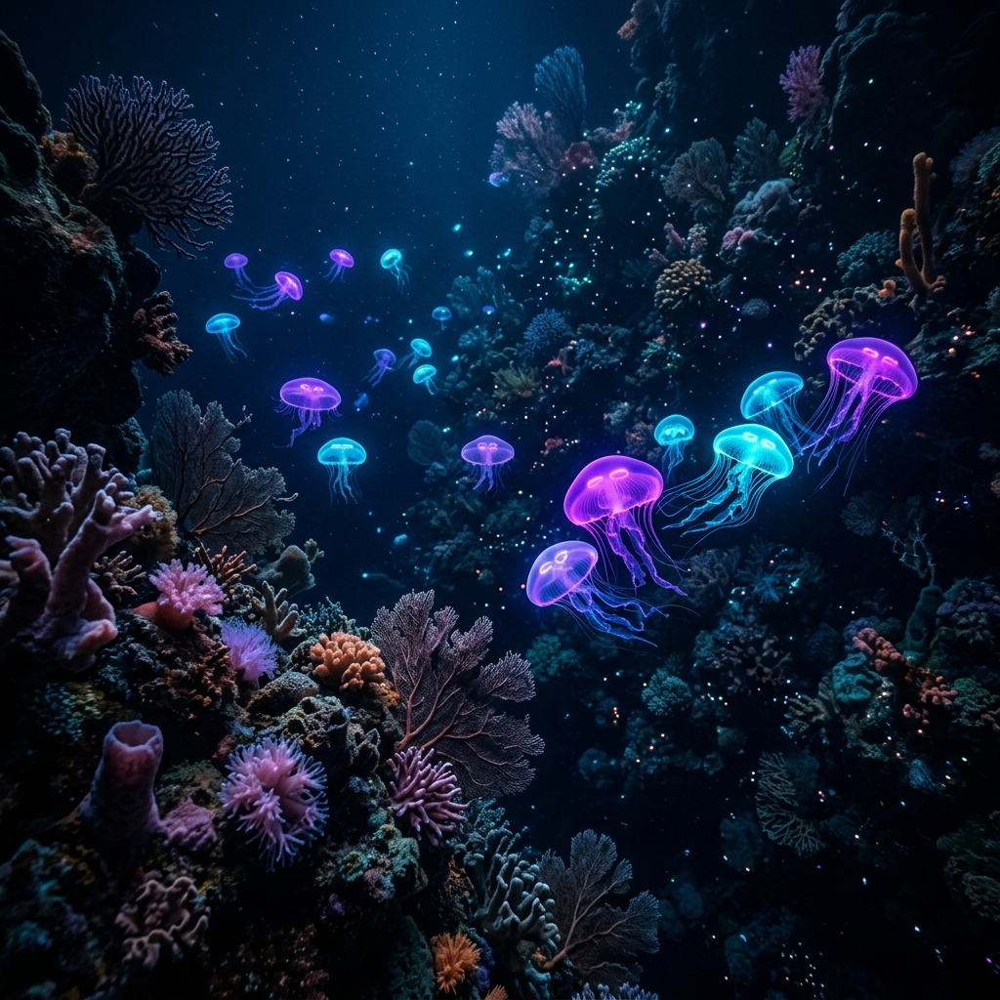

AI Researcher & ML Engineer (B.Tech, SRM IST, GPA 9.87/10). Specializing in building autonomous Agentic AI ecosystems, Generative AI pipelines, Computer Vision anomaly detection, and robust full-stack data infrastructures.
Bridging the gap between raw biometric datasets, computer vision, and clinical decisions.
I am a driven AI Researcher and Machine Learning Engineer pursuing my B.Tech at SRM Institute of Science and Technology, Kattankulathur. Ranked in the top 1% of my cohort with a CGPA of 9.87/10, I focus on building and deploying scalable real-time AI solutions.
My work is centered around Generative AI, autonomous Agentic systems, multi-modal pipelines, and MLOps. I have successfully completed internships at PwC, conducted deep-learning based underwater detection research at USRF, and architected full-stack platforms from the ground up.
LangChain, LangGraph, autonomous medical workflows, and self-learning healthcare agents.
Object detection in murky water (YOLO, ResfEANet), OCR compliance, and medical anomaly identification.
My technical toolkit and the languages, libraries, and frameworks I use.
My professional internships and research fellowship achievements.
Engineered scalable data pipelines and modern data architectures to transform raw datasets into structured, analysis-ready environments. Leveraged Python and Generative AI frameworks to automate complex business workflows and extract insights from unstructured data. Developed data-driven business cases using structured consulting frameworks, bridging the gap between technical ML/AI solutions and executive-level strategy.
Conducted research on underwater object detection using YOLO integrated with ResfEANet. Designed murky water data augmentation techniques, tuned anchor boxes, and applied external attention modules. Achieved a 75% improvement in mAP on real-world BRAKISH and URPC datasets.
Created an AI-Powered Identity Verification and Fraud Detection system for automated KYC compliance. Implemented Multi-Modal Recognition pipelines using Computer Vision for real-time document verification (OCR) and Biometric Authentication. Enhanced Anomaly Detection models to identify synthetic identities and forged credentials, achieving significant reductions in manual verification effort and enhancing AML (Anti-Money Laundering) adherence.
Built and maintained two production-grade platforms with secure login, admin dashboards, and payment integrations (Stripe). Implemented responsive front-end, backend APIs, and modular code with React, Django, and MySQL. Used GitHub Actions for deployment automation and sprint-based task delivery.
Designed a deep learning pipeline to detect anomalies in X-rays and MRIs. Applied CLAHE and histogram equalization using OpenCV. Achieved 87%+ accuracy and deployed using Flask. Collaborated with research leads to test usability and feedback loops.
Built a full-featured resume generator with user login/register, drag-and-drop blocks, theme switcher, and PDF output. Integrated MongoDB for session-based persistence. Used TailwindCSS to ensure responsive UI across devices.
A handpicked gallery of my autonomous agents, computer vision platforms, and service systems.

My academic path and certified technical benchmarks.
2023 -- 2027 | Chennai, Tamil Nadu
Top 1% of cohortSaharanpur, Uttar Pradesh
Academic publications, deep learning reports, and an interactive model testing environment.
Designed a murky water augmentation algorithm and tuned anchor boxes with YOLOv8 architectures, applying external attention modules to combat low-visibility marine imaging...
Proposed a multi-layered identity verification architecture combining Optical Character Recognition (OCR) with deep biometric verification algorithms...
Explores the deployment of self-learning LLM agents inside healthcare ecosystems, applying Genetic Algorithms to select optimal reasoning pathways...
Tune model parameters dynamically to visualize predicted performance and inference metrics based on training benchmarks.
Have a research project, internship opening, or dynamic idea? Let's build together.
Feel free to reach out via email, phone, or LinkedIn. Or send a message directly using the form, and it will route straight to my inbox.
Detailed description paragraph 1.
Detailed description paragraph 2.